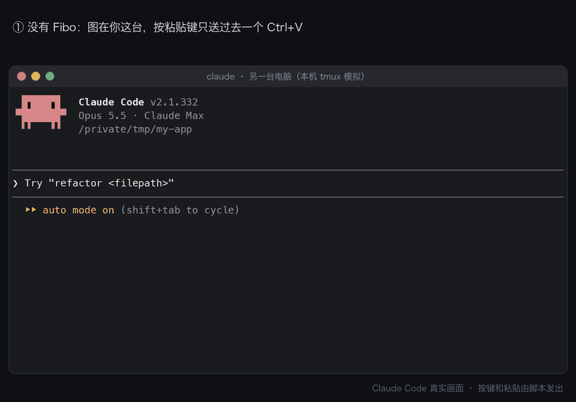

Fibo 是什么：一个给 Claude Code、Codex 这类 Coding Agent 用的原生 Mac 工作台，开源（MIT）。它能通过 SSH 连上另一台装了 Fibo 的电脑，在同一个窗口里开那台电脑的终端，做法见上一篇《一个窗口，管多台电脑上的终端》。安装：下载 DMG，或 brew install --cask majiayu000/tap/fibo。两台电脑都要装。
01 问题出在哪：⌘V 只送过去一个 Ctrl+V
本机的 Claude Code 能收到截图，靠的是它自己去读剪贴板。终端里按 ⌘V 时，如果剪贴板里只有图片，终端往程序里写一个字节 0x16，也就是 Ctrl+V。Claude Code 读到这个字节，再调用它所在系统的剪贴板接口把图取出来。终端和程序之间只有一条字节流，没有一种通用的写法能表示「接下来是一张 PNG」。
终端开在另一台电脑上时，这条路就断了。图在你面前这台电脑 A 的剪贴板里，0x16 却被送到电脑 B，B 上的 Claude Code 去读 B 的剪贴板，那里没有这张图。拖文件也一样：终端把文件在 A 上的路径当文字贴过去，B 上没有这个文件。
Fibo 的窗口连另一台电脑，靠的是 ssh -L 把那台电脑 fibo serve 后台的 Unix socket 转发到本机，然后用和本机一样的协议说话（上一篇讲过）。所以 Fibo 原来也有这个问题。PR #625 之前，对着另一台电脑的终端贴图或拖文件，窗口会拦下来并提示「文件和图片还不能从这里传到另一台电脑」。
OSC 52 帮不上
常有人建议用 OSC 52，让远程程序读写本机剪贴板。按 kitty 的文档，OSC 52 只管纯文本；图片要用 kitty 扩展的 OSC 5522，支持它的终端很少。有人给 Claude Code 提过「ssh 下用 OSC 52/5522 贴图」的 issue #42712，已关闭；我们测的 v2.1.332 收到 Ctrl+V 时读的仍是它所在电脑的剪贴板。终端图片协议（kitty、iTerm2 的那种）方向相反，管的是程序往终端里画图。
02 关键观察：一个单独的图片路径就是一个附件
本机用 Claude Code 时，把截图文件拖进终端，输入框同样会变成 [Image #1]。拖放没有用到私有接口：终端只是把文件路径当一次粘贴写进去（Fibo 用 bracketed paste，即 \x1b[200~…\x1b[201~ 包起来）。Claude Code 看到一次粘贴里只有一个图片文件的路径，就去磁盘读这个文件，挂成附件。
Fibo 的手机端早就用这条规律给电脑上的 Agent 发图：手机把图传给电脑上的 fibo serve，后台存成文件，再把路径单独贴进终端。动手之前，我们先把边界摸清楚：在 Claude Code v2.1.332 里，每种写法各做一次 bracketed paste，一共 20 次。
| 输入框里原来有什么 | 这一次粘贴的内容 | 结果 |
|---|---|---|
| 空 | 绝对路径 /tmp/fibo-edge/shot.png | [Image #1] |
| 空 | 绝对路径后面多一个空格 | [Image #1] |
| 空 | 路径后面跟文字 /tmp/…/shot.png 看看这个 | 原样当文字 |
| 空 | 文字在前 看看这个 /tmp/…/shot.png | 原样当文字 |
| 空 | 文件名带空格，转义 my\ shot.png | [Image #1] |
| 空 | 文件名带空格，不转义 my shot.png | [Image #1] |
| 空 | 路径外面包单引号或双引号（2 次） | [Image #1] |
| 空 | ~ 开头 ~/fibo-edge-shot.png | 原样当文字 |
| 空 | 相对路径 shot.png（文件就在当前目录） | 原样当文字 |
| 空 | JPEG、GIF、WebP 的绝对路径（3 次） | [Image #1] |
| 空 | TIFF、BMP 的绝对路径（2 次） | 原样当文字 |
| 空 | 格式对，但文件不存在 | 原样当文字 |
| 空 | 两个绝对路径，中间一个空格 | [Image #1] [Image #2] |
| 已经打了「看看这个 」 | 绝对路径加一个空格 | 看看这个 [Image #1] |
| 已经打了「看看」 | 两个绝对路径，空格隔开 | 看看[Image #1] [Image #2] |
| 空，贴完再打字 | 绝对路径加一个空格，之后打「图里是什么」 | [Image #1] 图里是什么 |
判断看的是「这一次粘贴」，跟输入框里已经有什么无关：路径和文字在同一次粘贴里就当文字，路径单独贴、前后另外打字都没问题。这张表定下了 Fibo 要守的四条：
- 先落盘，再回绝对路径：
~和相对路径都不认，文件不存在也不认。 - 路径单独作为一次粘贴：不和别的文字拼在一起。
- TIFF、BMP 先转 PNG：测过的六种格式里只认 PNG、JPEG、GIF、WebP，而有些 App 往剪贴板里只放 TIFF。
- 多张图用空格连起来一次贴：路径按 shell 规则转义，带空格的文件名也能认。
不用 Fibo，手动也能贴：截图存成文件（macOS 按 ⌘⇧4 默认存到桌面），传到那台电脑，再在那边的 Claude Code 里单独粘贴绝对路径。
# 在你面前这台电脑上
scp ~/Desktop/截图.png 那台电脑:/tmp/shot.png
# TIFF 先转一下：sips -s format png 截图.tiff --out 截图.png
# 然后在那台电脑的 Claude Code 里，单独粘贴这一行
/tmp/shot.png可以先打字再贴，也可以贴完再打字，只要路径不和文字出现在同一次粘贴里。
03 设计：图片走终端外面，只有路径进终端
Fibo 要做的就是把上面的手动步骤藏进一次 ⌘V：窗口把图交给那台电脑的后台存成文件，拿回绝对路径，再把路径贴进终端。
ssh -L，和其他请求共用一条连接。窗口和那台电脑的后台之间本来就有协议，我们只加了一个请求 SaveImage { data }，data 是图片的 base64。按下 ⌘V 时，窗口先看这个终端在哪台电脑上：在本机就照旧发 0x16，让 Claude Code 自己读剪贴板；在另一台电脑上，就把图上传。拖图片文件进终端也走同一个上传函数。
那台电脑的后台收到请求后，解码、存文件、回路径（下面是简化过的代码）：
Request::SaveImage { data } => {
let bytes = base64::engine::general_purpose::STANDARD
.decode(data)
.map_err(io::Error::other)?;
let path = crate::pictures::save(&supervisor(shared)?.socket(), &bytes)?;
Ok(Reply::Text(path.to_string_lossy().into_owned()))
}pictures::save 和手机发图共用，图存进后台 socket 旁边的 phone-images/。窗口拿到路径，按拖文件的规则做 shell 转义，再贴进终端；终端开着 bracketed paste 模式时会包上 \x1b[200~…\x1b[201~，路径末尾留一个空格。
上传在后台线程里做，每次上传新开一条到转发 socket 的连接。ssh -L 给每条连接单独开一个通道，所以上传不占用终端打字用的那条连接。整个改动是 12 个文件，加 278 行、删 92 行。
04 细节与取舍
为什么不用手机那套上传协议
手机连电脑走的是另一套协议（ssh 主机 fibo remote --stdio），也能发图。但窗口连那台电脑已经有一条 ssh -L 转发，再开一条手机协议，同一台电脑就挂着两条 SSH 线路，断线和报错各管各的。加一个请求更省事。
base64 和 11 MB 上限
协议是 JSON。直接放 Vec<u8> 会被写成数字数组，每个字节要 3 到 4 个字符；base64 只多三分之一。一帧最大 16 MB，所以单张图上限定在 11 MB（编码后约 14.7 MB）。超过就在本机拦下并提示，不发出去。
格式：认文件头，不认后缀
窗口先看字节的文件头。PNG、JPEG、GIF、WebP 原样发；别的格式能解码成图片的（比如 TIFF、BMP）转成 PNG 再发，剪贴板和拖进来的文件都一样；解不出来的（PDF、源代码）就拒绝，提示先把文件传到那台电脑。那台电脑的后台也只收这四种文件头，别的字节一律不落盘。
多张图：一张失败就都不贴
一次拖进好几张时，窗口按顺序一张张上传，有一张失败，一个路径都不贴，免得输入框里只进去一半。已经传上去的几张留在那台电脑，按下面的规则 7 天后清掉。
存储：只有自己能读，留 7 天
phone-images/ 目录只有本人能进，文件权限 600，文件名是随机 UUID。每次存新图时顺手删掉 7 天前的。留 7 天，是因为恢复几天前的会话时，Agent 可能还要再读一次历史消息里的图。
旧版后台：不升协议主版本
常见情况是手上的 Fibo 更新了，那台电脑还是旧版。如果因为加 SaveImage 就升协议主版本，新窗口连旧后台时握手会失败，整台电脑的终端都用不了。所以版本不变：v0.1.4 及以后的后台遇到不认识的请求，会回一行 unsupported or invalid request: …，窗口把它换成「那台电脑上的 Fibo 太旧，还收不了图片；更新它之后再试」。v0.1.3 及更早的后台遇到不认识的请求会直接断开，这时窗口显示的是原始报错。
05 怎么验证的
- 单元测试：PNG 原样发出；TIFF 转成合法的 PNG；PDF 和源代码的字节被拒绝；旧后台的那行回复会被换掉，不原样显示。
- 后台端到端：测试里真的起一个
fibo serve，发SaveImage，检查回来的是phone-images/下的绝对路径、文件字节和发出去的一样；再把一段 shell 脚本当图发过去，后台拒绝。 - 两台真 Mac，两个方向：A 经窗口的转发往 B 发一张 487 KB 的 PNG，B 上文件的 sha256 和原图一致，权限
600，贴进 B 上的 Claude Code 变成[Image #1]，它答出了图里的内容。反过来，人坐在 B 前截图，在 B 的 Fibo 里切到 A 的终端按⌘V，A 上的 Claude Code 同样收到[Image #1]。
限制：还没测到的
- 拖文件：和
⌘V走同一个上传函数，但没在两台真机上拖过。 - 「那台电脑上的 Fibo 太旧」：只在单元测试里见过，真机两台都是新版。
- 慢网络上的大图：每次上传的连接读写各有 10 秒超时，上传时窗口也没有进度提示。几 MB 的图在很慢的链路上会不会超时，没测。
- 别的 Agent：上面的表只代表 Claude Code。Codex 启动时先弹出 hook 审核界面，这次没测成；OpenCode 两台电脑都没装。按手机发图的经验它们也认单独的图片路径，但这次没验证。
- 对面是 Windows：路径按 Unix shell 规则转义，没试过。
总结：三条做法
- 先实测，再设计：20 次粘贴定下了四条约束（绝对路径、单独粘贴、转 PNG、空格连多张），设计按表来，不靠猜。
- 用已有的连接和存储：协议只加了 1 个请求，存储和手机发图共用一个函数，整个改动 12 个文件、+278/−92 行。
- 新功能不升协议主版本：新窗口照样能连旧后台的终端，只是贴图时报错（v0.1.4 起的后台会提示先更新）。